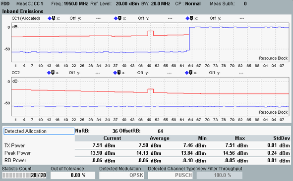

The inband emissions are displayed in one diagram per component carrier and as a table of statistical results.

For measurements without carrier aggregation, a single diagram is displayed. For measurements with carrier aggregation, all component carriers are measured and the results are displayed in one diagram per carrier.
Each diagram shows the average power in all resource blocks (RBs) of the measured slot. So it shows a power vs. frequency representation where every RB comprises 12 subcarriers. The RB powers are normalized to the current RB power.
The figure shows a measurement with carrier aggregation. In the CC1 diagram, 36 out of 100 resource blocks are allocated. The power of the remaining, non-allocated blocks must be below the red limit line. For the CC2, no resource blocks are allocated. So the entire trace must be below the red limit line.
The carrier currently selected as "Measurement Carrier" is marked by the string "(Allocated)". It must contain allocated resource blocks. Otherwise, the measurement fails ("Underdriven" or "Sync Error").
The inband emissions are calculated from the I/Q origin offset-corrected signal, see "Calculation of Modulation Results".
NRB view filter Resource blocks are allocated dynamically: Their number and position within the subcarrier range can vary from one measured slot to another. Use filter settings ("Config... > Measurement Control > View Filter") to restrict the measurement to a definite number of allocated RBs. |
The table results refer to the configured "Measurement Carrier" (displayed as "MeasC" at the top of the view). For details about the table results, see "View TX Measurement and BLER".
For the parameters at the bottom, see "Common View Elements".
For query of the diagram contents via remote control, see "Inband Emission Results".